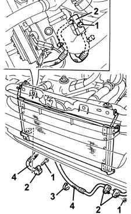

5040A50 pipe from compressor to air conditioner condenser - r+r
- Path
- Procedures > 50 AUXILIARY UNITS > 5040 AIR CONDITIONING CASING AND COMPONENTS > 5040A air conditioner coolant circuit > 5040A50 pipe from compressor to air conditioner condenser - r+r
- Kind
- repair procedure (removal / refitting; the operation number is the code)
- Applies to
- all engines; all production periods
- Interactive page
- https://sloeber94.github.io/elrnDB-fMltpl/en/#/2891809
Applies to: all engines; all production periods
Applies to: all engines; all production periods
 Removing
Removing
 Refitting
Refitting5550B30 L/H OR R/H HORN (ONE) - R+R
Drain the coolant fluid (refer to op. 5040A10 Air conditioning refrigerant CIRCUIT - Draining and Refilling ).
1. Undo the bolts and the nut.
2. Disconnect the pipe connectors.
3. Release the pipe from the retaining bands.
4. Remove the pipe.

Applies to: all engines; all production periods
Refitting
RemovingCheck that the pipe is not damaged or cracked.
Reposition the pipe and fix it using the retaining bands.
Connect the pipe connectors.
Tighten the bolt and the nut fixing the condenser connector and the intermediate connector.
 | Fastening | Component | Ø | Value (daNm) |
|---|---|---|---|---|
- | Bolt | COOLANT SYSTEM FITTINGS | M6 | 0.9 |
Tighten the bolt fixing the pipe connector to the compressor.
| Fastening | Component | Ø | Value (daNm) |
|---|---|---|---|---|
- | Bolt | Compressor pipe connector | M10 x 1.25 | 3.5 |
5550B30 L/H OR R/H HORN (ONE) - R+R
Repressurize the coolant fluid (refer to op. 5040A10 Air conditioning refrigerant CIRCUIT - Draining and Refilling ).
Topics linked from this page (3)
- 5040A air conditioner coolant circuit
- 5040A10 Air conditioning refrigerant CIRCUIT - Draining and Refilling
- 5550B30 L/H OR R/H HORN (ONE) - R+R